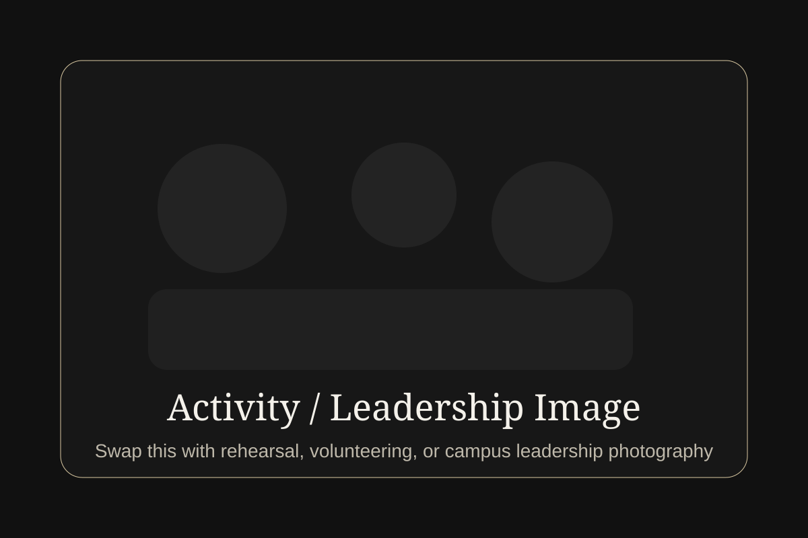

Faculty and Masterclass Educator
Public biographies identify Gavilán as violin faculty at Manhattan School of Music, a performer-teacher affiliated with Montclair State University, and an artist who gives international masterclasses and coaching.